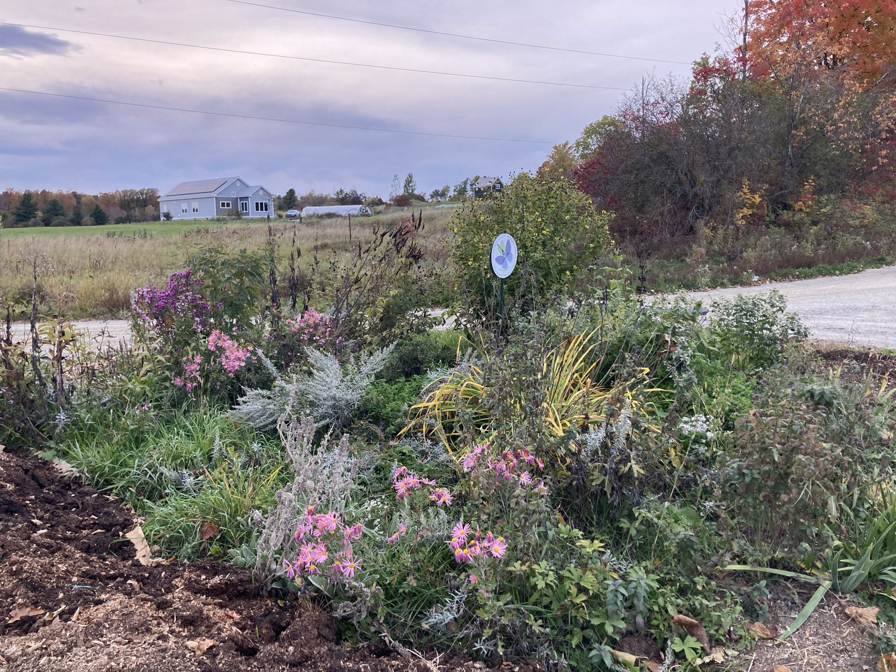
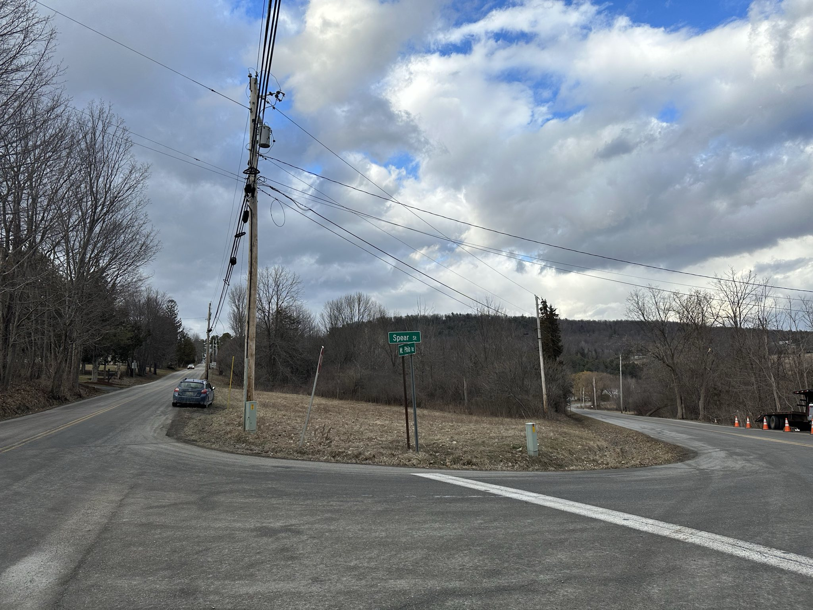
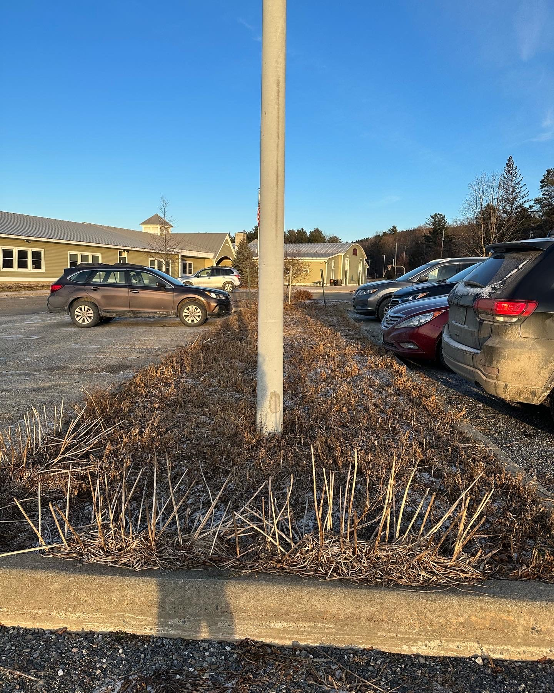

January 2023 · Part 2
Pollinator Projects and Workshops for 2023 (Part 2)

Pollinators are exceptionally important, this was true before they became a headline. With all the buzz about saving the bees and the butterflies (and everything else in between) I’m excited to get children and neighbors excited about two new garden projects this growing season. Thanks to many donors, small and large, we can build out an additional 4,000 sq feet of pollinator habitat. This 4,000 square foot area is divided between two major gardens: The Charlotte Garden on Spear and Philo in Charlotte, Vermont and the parking lot at Monkton Central School in Monkton, Vermont.
If you are wondering why this two spaces, these two areas seemingly already filled with pollinators, just stop at take a look at Vermont’s Bee Survey. Over 350 wild bees identified, 55 desperately need our help. If that isn’t inspiring enough to stop using pesticides and start buying flowering perennials (and trees) then ask yourself: How many butterflies and bees did you see in YOUR yard last year? How many could YOU identify?
If you are reading this and you care (I assume it’s just my mother-in-law and a few passerby’s) this depressing news goes much further than a backyard bee and butterfly count. This is why I plant beyond my yard— I want you and everyone else to care just a little more and get out there, evangelize this effort. Nothing is done alone, that includes destroying or healing the environment...rant over...more happy garden news.
The Charlotte Garden
This corner of Spear st. and Mt Philo rd. has been mowed, compacted, and invaded with an array of invasive plants. Instead of welcoming people to Charlotte with a little wasteland, we will welcome folks with a 2,000 square foot masterpiece of native plantings. In mid-April, we will use a no-till garden method to lay the foundation for hundreds of native plantings, a patch of wildflowers, and zinnia seeds. This is a great stop if you are riding your bike down Spear st. or want to watch a sunset looking onto the rolling hills of East Charlotte. This ambitious project was brought to me on a dark, early winter night. It was a thought, just a thought and soon it will be a reality. The garden space has been sponsored by Horsford Nursery, The Pomerleau Foundation, Fat Cow Farm, and volunteers from Master Gardener, Sustainable Charlotte, and the Lewis Creek Foundation.

The Parking Lot Pollinator Garden at Monkton Central School
Parking lots are generally terrible places. It’s funny to me how much room we dedicate to our cars! If only we cared for the environment as much as we do for our vehicles! This garden is an effort to demonstrate that we can make something (seemingly useless to the environment) quite useful and beautiful. The garden will be created using a no-till method. Simply put, we are using cardboard collected from the cafeteria, horse manure, and wildflower seeds. The seed mix we are using is specific to dry, hot spaces. American Meadows has an amazing selection of seed mixes and they are a local Vermont business, this is a win-win. In addition to a meadow mix, we have zinnia seeds, and a small amount of sunflowers. Students, teachers, local gardeners, master gardeners, and more will have a hand in this. This garden is supported by the Monkton PTO, the MAUSD district, and donations of manure and seeds from staff.

Speaking of Gardens
I’m going to be speaking about the garden projects (past and present) and other ramblings about bee habitats, butterflies, and building habitats for pollinators. Check out the links below if you’d like to talk pollinators. If you have an idea just reach out via blog!
- Backyard Biodiversity at the Charlotte Library: March 22, 2023
- Monkton Plant Sale with the Monkton Bee Team...Monkton Town Hall: Date TBD
- Building a Bee Habitat at Red Wagon Plants: June 17th, 2023
- Planting for Bees and Pollinators at Horsford Nursery: July 29th, 2023
- Building a Bee Habitat at Red Wagon Plants: September 2nd, 2023
Filed in the garden journal · January 2023 · Part 2